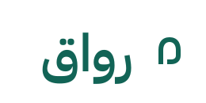

الكلمة والرمز
رمز مستقل للأحجام الصغيرة؛ الكلمة للمواضع التي تسمح بالقراءة. لا نص عربي مصغر داخل أيقونة 16 بكسل.
ثلاث قراءات بصرية لرواق. نختبر الكلمة والإيقاع والمساحة، مع الحفاظ على الاسم والألوان والمحتوى.
الاتجاه المختار للتنفيذ: Bهذه صفحة دراسة محلية. الشاشات أدناه نماذج تصميم ثابتة بمحتوى اصطناعي؛ ليست لقطات للمنتج أو إثباتًا لعمل ميزاته.
نفس الألوان، عنوان البداية، أربعة اقتراحات، شريط المشاريع ومحرر الرسالة في كل اتجاه.
اختلافات في علاقة الكلمة بالرمز، وتقسيم المساحة، وطريقة إبراز الدليل؛ دون إعادة تسمية المنتج.
لا أدوات تعمل داخل هذه الصفحة، ولا تسجيل أو بيانات مستخدمين أو اتصال خارجي.
حضور طباعي أفقي: اسم رواق هو نقطة الدخول، مع رمز قاف تجريدي وتفصيل خطي يضبط الإيقاع.
أفكارك مع مصادرها، وخطوتك التالية أمامك.
اختر بداية أو اكتب ما تريد العمل عليه.
هذه مساحة عرض ثابتة؛ عناصرها لا تنفذ إجراءات.
العلامة + لوحة اللون نفسها
اختبار الحجم البصري
المحتوى نفسه بثلاثة أنظمة كتابة
رواق — مساحة للفكرة. الإصدار 2.1.
Riwaq — room for an idea. Version 2.1.
ריוואק — מקום לרעיון. גרסה 2.1.
ما يختبره الاتجاهوضوح مباشر للاسم، وارتباط سريع بالكلمة العربية.
ما يحتاج انتباهًاقد يحتاج الرمز التجريدي إلى وقت ليرتبط بالاسم؛ راجع قراءته في 16 بكسل.
رمز رواق المفتوح محفوظ، ومساحة قراءة تحريرية داخل عتبة غير مغلقة. يدخل النحاس في موضع الدليل وحده.
أفكارك مع مصادرها، وخطوتك التالية أمامك.
اختر بداية أو اكتب ما تريد العمل عليه.
هذه مساحة عرض ثابتة؛ عناصرها لا تنفذ إجراءات.
العلامة + لوحة اللون نفسها
اختبار الحجم البصري
المحتوى نفسه بثلاثة أنظمة كتابة
رواق — مساحة للفكرة. الإصدار 2.1.
Riwaq — room for an idea. Version 2.1.
ריוואק — מקום לרעיון. גרסה 2.1.
ما يختبره الاتجاهصلة بالعلامة الموجودة ومساحة هادئة للنص والدليل.
ما يحتاج انتباهًاتكرار العتبة حول كل عنصر يثقل الشاشة؛ تستخدم باعتدال في موضع رئيسي.
ثلاث ضربات تصنع رمزًا مستقلًا. تتكرر فكرة الإيقاع في شرائط وشبكة منظمة تربط أجزاء المساحة.
أفكارك مع مصادرها، وخطوتك التالية أمامك.
اختر بداية أو اكتب ما تريد العمل عليه.
هذه مساحة عرض ثابتة؛ عناصرها لا تنفذ إجراءات.
العلامة + لوحة اللون نفسها
اختبار الحجم البصري
المحتوى نفسه بثلاثة أنظمة كتابة
رواق — مساحة للفكرة. الإصدار 2.1.
Riwaq — room for an idea. Version 2.1.
ריוואק — מקום לרעיון. גרסה 2.1.
ما يختبره الاتجاهنظام مرن في القوائم والعناوين ومجموعات المحتوى.
ما يحتاج انتباهًاقد يبدو أكثر تقنية وكثافة؛ يجب أن تبقى القراءة أهم من الشبكة.
اختير B لأنه يستكمل علامة رواق الموجودة ويعطي النص والدليل حضورًا أوضح. هذا حكم تصميمي بعد مراجعة النماذج، وليس قياس تفضيل المستخدمين أو نتيجة دراسة سوق.
| محور المقارنة | A — الكلمة أولًا | B — العتبة المفتوحة | C — إيقاع المعرفة |
|---|---|---|---|
| وضوح الاسم | الكلمة كبيرة ومباشرة. | اسم واضح بجوار رمز موجود. | الاسم واضح، لكن الشبكة تنافسه. |
| صلة الرمز برواق | حرف ق يختزل جزءًا من الاسم. | يحفظ الرمز المفتوح والاستمرارية. | الشرائط قد تذكّر بالصوت أو التحليلات. |
| هدوء القراءة | تحريري، مع خط أفقي قوي. | مساحة مفتوحة وإشارة محدودة للدليل. | إيقاع منظّم لكنه أكثر كثافة. |
| الأحجام الصغيرة | نقطتا القاف تحتاجان فحصًا دقيقًا. | شكل واحد ومساحة داخلية واضحة. | بسيط، لكن طابعه عام نسبيًا. |
| توسّع النظام | مناسب للعناوين والتكوين الأفقي. | قابل للاستخدام في القراءة والمراجع والمواد التحريرية. | مناسب للشبكات والقوائم، مع خطر التكرار. |
كيف ينتقل B إلى التطبيق؟ يستعمل التنفيذ الفعلي زاوية دخول مفتوحة صغيرة ومساحة تحريرية مشتركة. لا يكرر الإطار الكبير في هذا النموذج حول كل بطاقة، ولا يعتمد تدوير كل البطاقات. النماذج أعلاه تحفظ فكرة كل اتجاه؛ لقطات التطبيق ونتائج قبولها دليل منفصل.
عرض الأصل السابق والاقتراح في مساحة ثابتة 260 × 130 بكسل. نحافظ على نسب كل أصل؛ المقارنة البصرية لا تستنتج تكافؤ سماكات الحروف.


نظام هادئ يضع القراءة في المركز. انحناءة تفتح المجال، وإشارة نحاسية للدليل، وكلمة عربية واضحة. اختير هذا الاتجاه بحكم تصميمي موثّق، وليس بناءً على دراسة مستخدمين.
رمز مستقل للأحجام الصغيرة؛ الكلمة للمواضع التي تسمح بالقراءة. لا نص عربي مصغر داخل أيقونة 16 بكسل.
وضوحٌ في كلّ خطوة.
Make room for clarity.
מקום לחשוב בבהירות.
IBM Plex Sans Arabic / Sans / Sans Hebrew. أوزان متاحة محليًا وتراخيص OFL محفوظة؛ لا وعد بتغطية جميع اللغات.
الرمز بعرض x، والهامش المقترح حوله¼x. لا تحشره في حدود الحقل أو بجوار نص ملتصق.
العتبة ليست إطارًا حول كل عنصر. النحاس يحدد الدليل؛ نص الدليل نفسه يبقى بالحبر أو بلون مقروء.
بماذا نبدأ اليوم؟
مباشرة، هادئة، مفهومة. نسمّي القيد ونوضح الدليل. لا عبارات تفوق أو قدرة لم تُختبر.
الهوية عربية · الاستخدام عالميملصق تحريري مقترح لاختبار الكلمة والرمز والمساحة في سياق مستقل. محتواه تعبير عن اتجاه العلامة، وليس إعلانًا عن ميزات أو نتائج ذكاء اصطناعي.
مسودة محلية غير منشورة